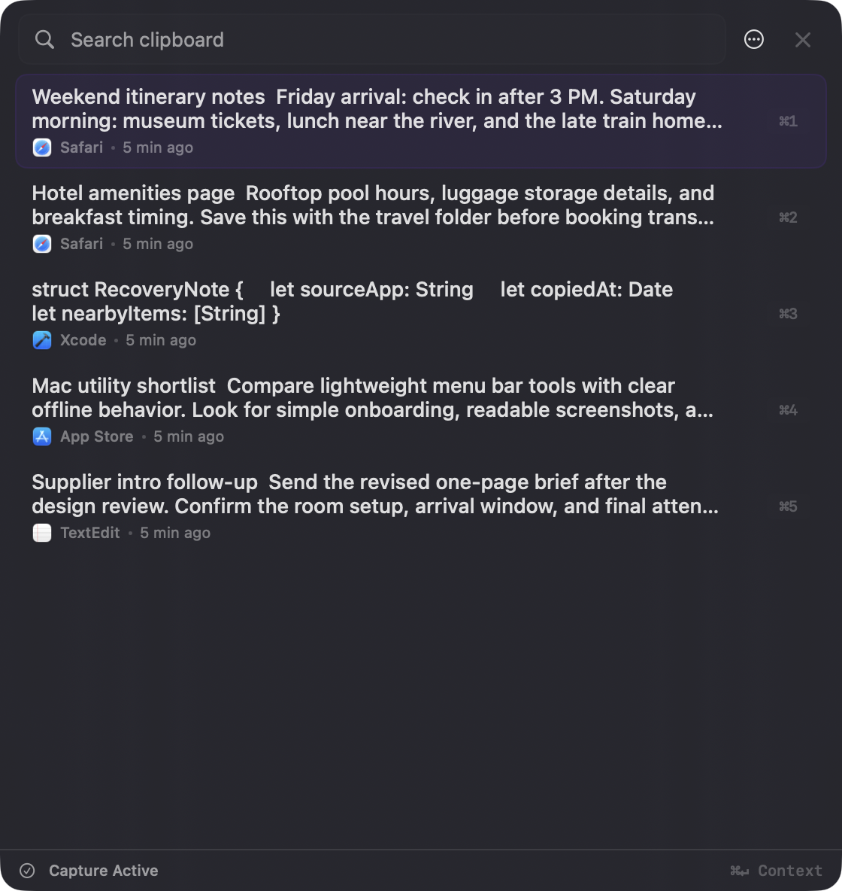

Works from the Mac
Breadcrumb is designed around the macOS pasteboard, local app context, and native Mac interaction patterns.
Local-first means the clipboard history product starts on your device. Breadcrumb is designed for Mac users who want search, source context, and recovery without making cloud sync the foundation.

Meaning
For clipboard history, local-first means copied material should not require a web account, remote database, team workspace, or cross-device sync service before it becomes useful.
Breadcrumb is designed around the macOS pasteboard, local app context, and native Mac interaction patterns.
Clipboard history is treated as device data first, with local storage and local image payload handling in the launch direction.
There is no need to create an account or rely on cloud sync before you can recover copied items on your Mac.
Why clipboard data is different
People copy passwords, code, personal messages, client text, addresses, payment details, and private research. A clipboard manager should treat that as sensitive by default.
Keeping clipboard history local reduces the number of services, accounts, and policy surfaces involved.
Without sync as the default promise, Breadcrumb can be explicit about what it captures and what it does not.
A Swift-based Mac utility can stay lightweight instead of shipping a heavy runtime around a simple clipboard workflow.
The product direction matches the user expectation that sensitive Mac utility data should stay close to the device unless there is a clear reason otherwise.
Practical examples
Tradeoffs
Related guides
FAQ
It is a clipboard history app that treats the device as the primary place where copied data is stored, searched, and managed, instead of requiring a cloud account as the foundation.
Breadcrumb's launch direction is a native Mac utility with local clipboard history. The product does not need cloud sync to make recent clipboard recovery useful.
No. Encrypted sync still moves clipboard history between systems. Local-first starts by keeping clipboard history useful on the Mac itself.
Breadcrumb
Breadcrumb is built around that premise: native Mac recovery, local storage, and source context before cloud convenience.